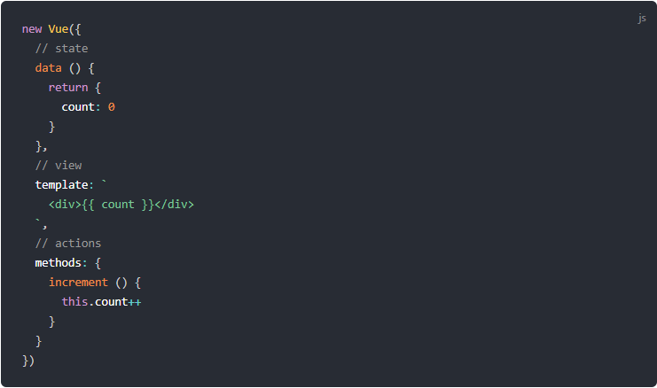
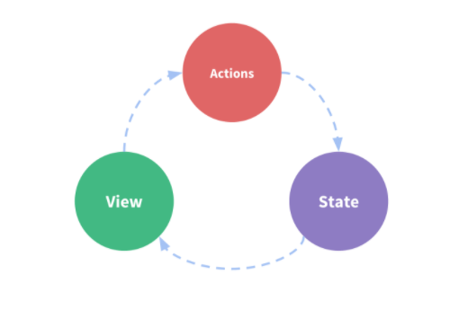

Vuex je obrazac za upravljanje stanjima i bibliotekama u Vue.js aplikacijama. Služi kao centralizovana prodavnica za sve komponente u aplikaciji, sa pravilima koja osiguravaju da se stanja mogu ponašati samo na predviđen način. Takođe se integriše sa zvaničnim Vue-ovim proširenjem devtools (otvara novi prozor) da bi pružio napredne funkcije kao što su otklanjanje grešaka tokom putovanja sa nultom konfiguracijom i izvoz / uvoz stanja brzih snimaka.
Kako bismo razumeli Vuex, prikazaćemo njegov rad na primeru. Naime, počećemo sa jednostavnom brojač aplikacijom napisanom u Vue framework-u:
To je samostalna aplikacija sa sledećim delovima:
Stanje, izvor istine koja pokreće našu aplikaciju;
Pogled, deklarativno mapiranje stanja;
Akcije, mogući načini na koje bi se stanja mogla promeniti kao reakcija na korisničke uloge iz pogleda.
Sledeća slika prikazuje jednostavan prikaz koncepta „jednosmernog toka podataka“:
Međutim, jednostavnost se brzo raspada kada imamo više komponenti koje dele zajedničko stanje:
Više prikaza može zavisiti od istog dela stanja.
Akcije iz različitih pogleda možda će morati da mutiraju isti komad stanja.
Za prvi problem, prosleđivanje rekvizita može biti zamorno za duboko ugnežđene komponente i jednostavno ne funkcioniše za povezane komponente. Za drugi problem često pribegavamo rešenjima kao što su posezanje za direktnim referencama roditelja/deteta ili pokušaj mutiranja i sinhronizacije više kopija stanja putem događaja. Oba ova obrasca su krhka i brzo dovode do neodrživog koda.
Pa zašto ne bismo izdvojili deljeno stanje iz komponenata i upravljali njime u globalnom singletonu? Ovim naše stablo komponenata postaje veliki „pogled“ i svaka komponenta može pristupiti stanju ili pokrenuti akcije, bez obzira gde se nalaze u drvetu!
Definisanjem i razdvajanjem koncepata koji su uključeni u upravljanje stanjima i sprovođenje pravila koja održavaju nezavisnost između pogleda i stanja, našem kodu pružamo veću strukturu i održivost.
Ovo je osnovna ideja iza Vueka, inspirisana Flux-om, Redux-om i The Elm Architecture. Za razliku od ostalih obrazaca, Vuex je takođe implementacija biblioteke posebno prilagođena Vue.js-u da iskoristi svoj granularni sistem reaktivnosti za efikasno ažuriranje.
Ako želite da naučite Vuex na interaktivan način, možete pogledati ovaj Vuex kurs na Scrimba, koji vam daje kombinaciju screencast-a i igrališta sa kodom koje možete pauzirati i igrati se bilo kada.
Vuex nam pomaže da se bavimo zajedničkim upravljanjem stanjima
uz troškove više koncepata i primera. To je kompromis između
kratkoročne i dugoročne produktivnosti.
Ako nikada niste izgradili
obimni SPA (Sigle Page Application) i uskočili pravo u Vuex, možda će vam se učiniti frustrirajuće
i zastrašujuće. To je sasvim normalno - ako je vaša aplikacija jednostavna,
najverovatnije ćete biti u redu bez Vuex-a. Jednostavan obrazac prodavnice
je možda sve što vam treba. Ali ako gradite SPA, srednjeg ili velikog obima,
velika je verovatnoća da ste naišli na situacije koje vas navode na razmišljanje
o tome kako bolje upravljati stanjem izvan komponenata Vue, a Vuex će biti
prirodni sledeći korak za vas. Postoji dobar citat Dana Abramova, autora Redux-a:
"Flux biblioteke su poput naočara: znaćete kada vam zatrebaju."